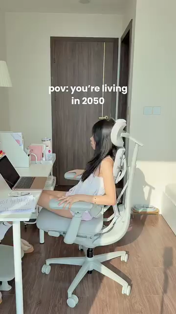
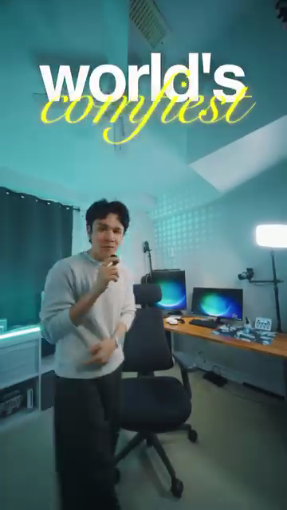

STEP 01
00:00–00:05
Your Setup, Your Chair — The Hook人物＋椅子＋桌面｜开头
SHOOT · Required footage必拍画面
Open in your real workspace with your face and the chair visible. You may begin standing beside the chair with a hand on the backrest, then sit at the desk, turn toward the camera, and deliver the hook. Show the whole chair and enough of your monitor and desk to establish working or gaming. Start with use, not a long box opening.在真实工作空间开场，脸、人物和椅子同时可见。可以先站在椅旁扶着椅背直接讲，再坐到桌前转向镜头；交代桌面与电脑，让观众立即看懂你在工作或游戏。先给使用状态，不用长开箱起头。
SAY · Adapt in your own voice用自己的语言表达
“I spend my day [working / gaming] at this desk. Here’s how I set up this chair for the way I use it.”“我每天在这张桌前[工作／打游戏]，今天来看看这把椅子怎么调到适合我的状态。”
Framing references构图参考


Establish the creator and workspace, then turn to the camera.参考真实桌面与人物的关系；实际拍摄从第一帧露脸，转向镜头讲自己的使用需求。

Keep your face and chair together; adapt the hook to your actual audience.参考人物直接对镜头讲、椅子同时入镜。


Stand beside the chair, then sit down to demonstrate.站在椅旁扶着椅背开场，随后坐下进入演示；减少头顶留白。